実際の 画面で、来店 から 入店 まで
黒服が 何を 押すのかを 見ます
328 ・ RegentClub ・ WAVE ・ 花もみじ ／ 画面は テスト用の「テスト 見本」 ／ ← → キーで めくります
応募者が スマホで 開くと、最初は お店の えらびかた。
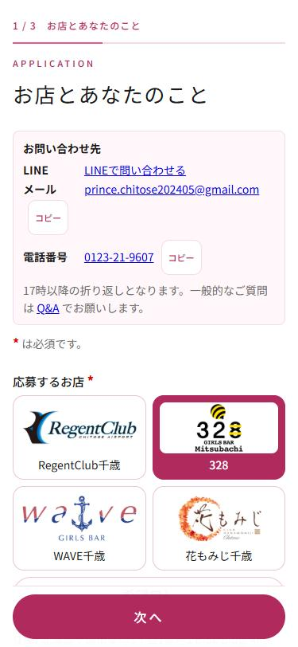
応募者 (キャスト)
お店を えらんで、名前・電話・メールなどを 入れて「次へ」
328・WAVE・RegentClub は 同じ 短い版 (3 ページ)
同意の あと、最後の ページで 面接の 日時を えらびます。
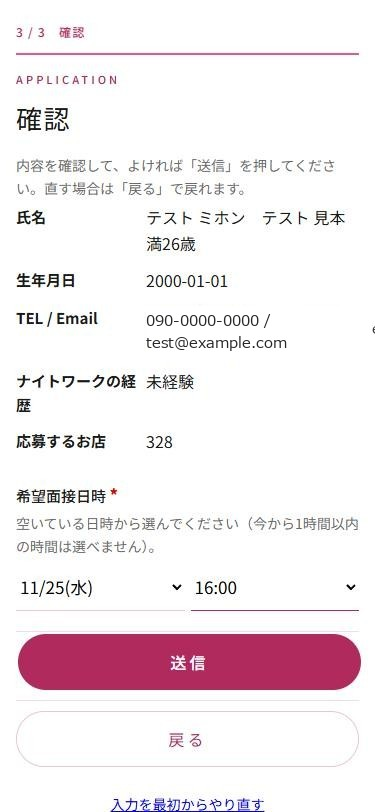
応募者
日付と 時刻を えらんで「送信」
空いている 枠だけ 出る。今から 1 時間以内は えらべない
「情報を店舗へ送信しました」が 出たら 完了です。
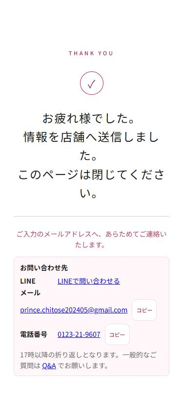
応募者
もう 何も 押さない (ページを 閉じる)
黒服には 求人通知メールが 届く (中身は 店・面接日時・ID だけ)
黒服ポータルの 面接管理 (応募者一覧) に 出ます。
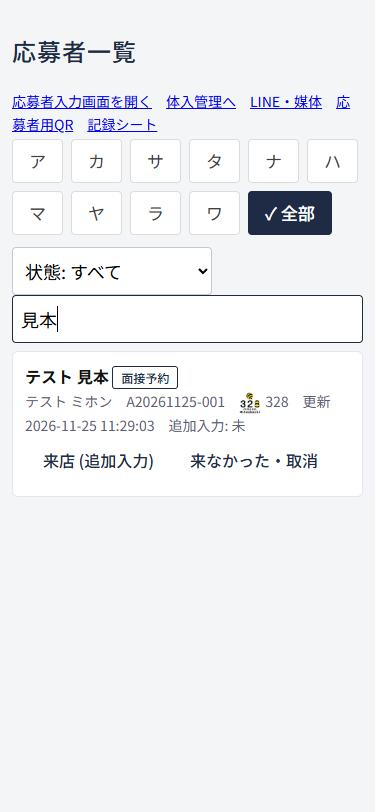
黒服は まだ 見るだけ
(まだ 何も 押さない)
「来店 (追加入力)」と「来なかった・取消」の 2 つが 出る
面接の 日に キャストが 来たら 押します。ここから 黒服の 仕事です。
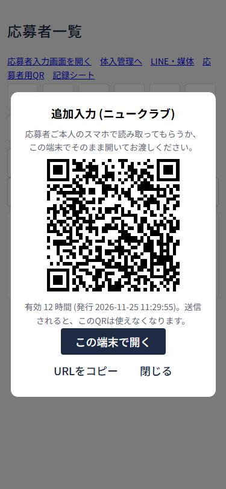
黒服
一覧の 「来店 (追加入力)」
QR が 出る。キャストの スマホで 読む (QR は 12 時間・1 回だけ)
328 も RegentClub と 同じ「ニュークラブ」の 追加入力です。
黒服は その間 ほかの 用事が できます。
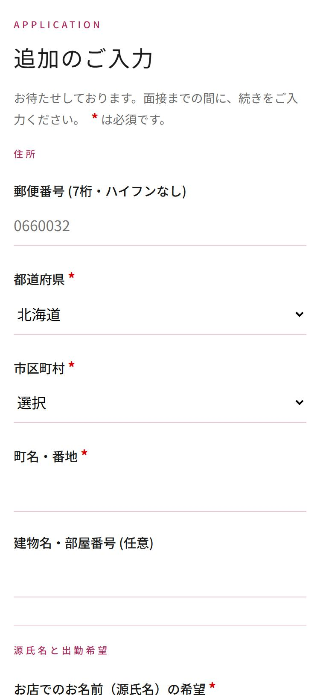
キャスト (QR を 読んだ スマホ)
住所を 入れる (市区町村は えらぶ)
入れた 内容は、あとで 面接の 画面に 空欄だけ 入る
源氏名は「確認」を 押して かぶりを 調べます。
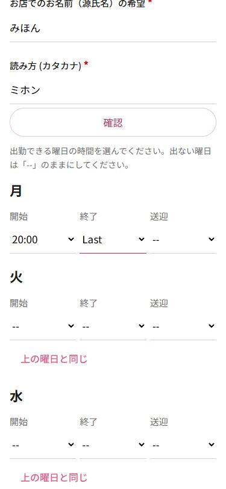
キャスト
源氏名・読み方 →「確認」→ 出勤できる 曜日と 時間
「使えます」が 出ないと 送信できない (在籍と かぶり防止)
面接用の 写真を 撮ります。
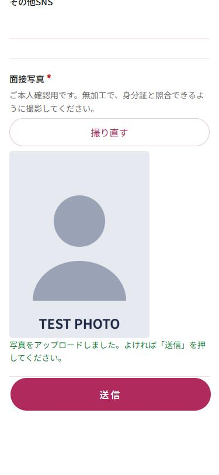
キャスト
写真を 撮る (本番は 本人の 顔) →「送信」
写真は 面接の 画面と 在籍の もとに なる
これで キャストの 仕事は おしまいです。
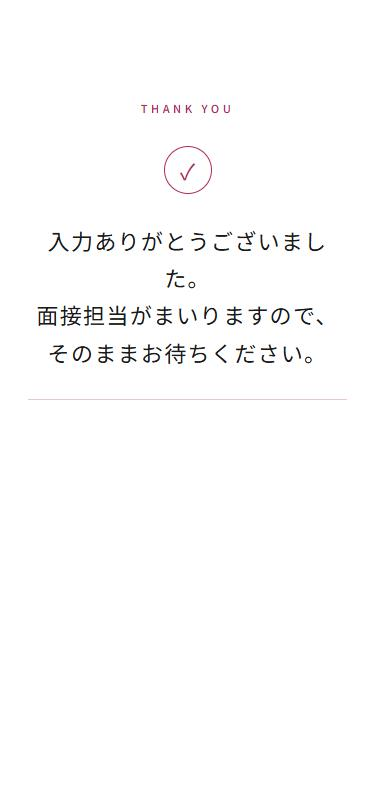
キャスト
何も 押さない (待つ)
QR は 使えなく なる (1 回だけ)
黒服は それを 見て 面接を 始めます。
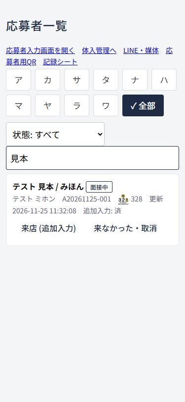
黒服
その人の 名前 (面接の 画面が 開く)
状態は 「面接中」。「来店」を 押した 時点で なっている
入った 内容を 見ながら 質問を 聞きます (全 6 ページ)。
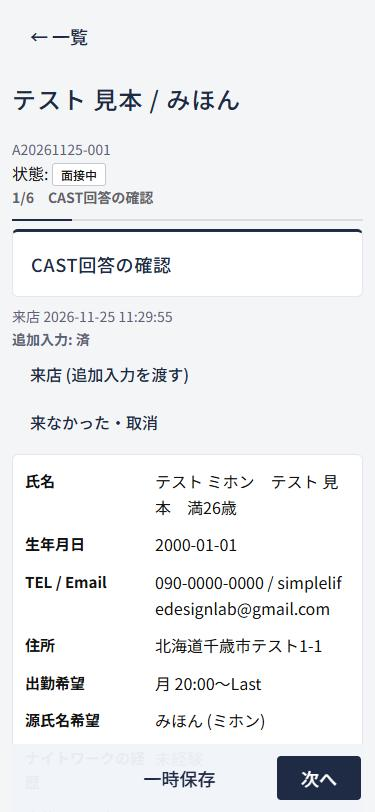
黒服
内容を 見て 下の 「次へ」 (やめる時は「一時保存」)
氏名・生年月日・住所・出勤希望・源氏名が キャストの 入力どおり 並ぶ
面接で 聞いて 黒服が 入れます。
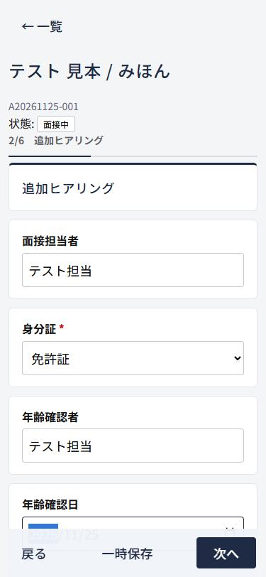
黒服
身分証を えらぶ・年齢確認者を 入れて「次へ」
身分証が 空だと 体験に 進めません
源氏名は キャストが 入れた 内容が 先に 入っています。
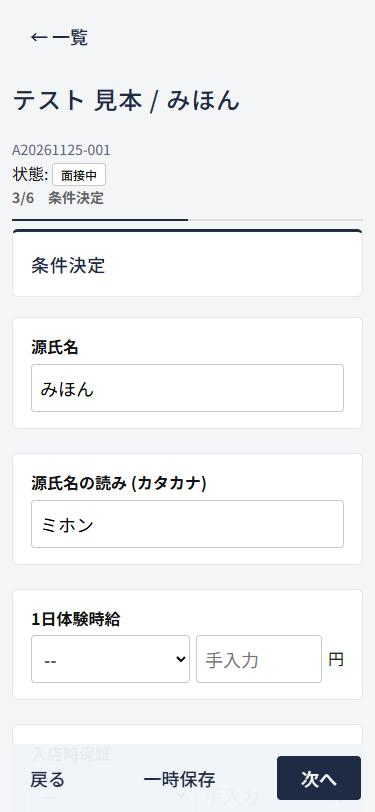
黒服
1日体験の 時給を えらんで「次へ」
時給は 体入管理と レジの 表に 出る
見た目や 印象を 選択や 数字で 残します。
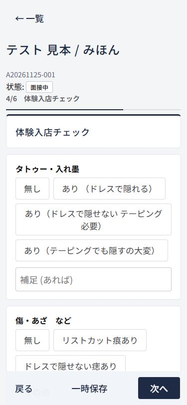
黒服
あてはまる 選択肢を 押して「次へ」
必須は ありません。採用ランク・総合点は この ページの 一番 下
「その他気になった事」と、一番 下に 健康状態の 欄が あります。
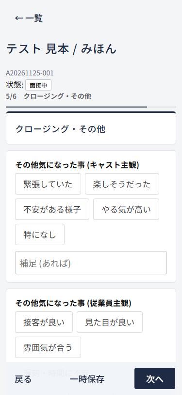
黒服
気になった 事を えらぶ → 下の 健康状態 → 「次へ」
健康状態は 体験に 進む 前に 4 つ 必要 (次の 2 枚)
足りない 項目は 画面の 上に 赤く 出ます。
黒服 (面接で 聞いて 入れる)
「当日体入」で 保存を 押すと、この 表示が 出る
持病・基礎疾患・精神疾患・アレルギーの 4 つが 空だと 保存できない
「あり」の 時は 内容も 書きます。
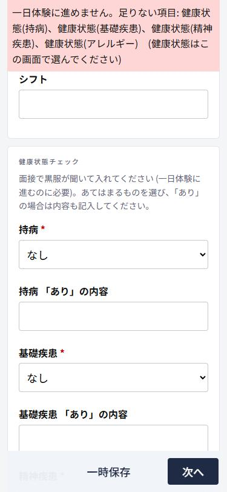
黒服
4 つ とも えらぶ
これで 「当日体入」「後日体入」が 保存できる
面接が 終わったら、4 つから 1 つ 押します。
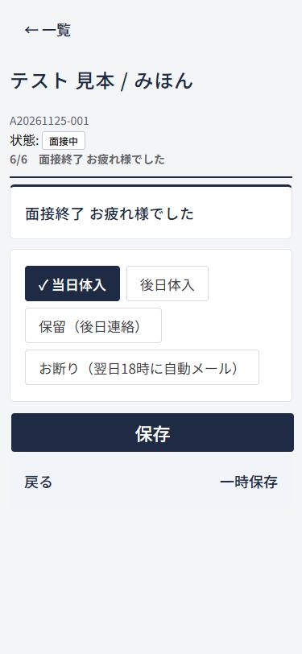
黒服
「当日体入」 →「保存」
「お断り」は 翌日 18 時に 自動メール (むやみに 押さない)
押したあとは 画面から 取り消せません。
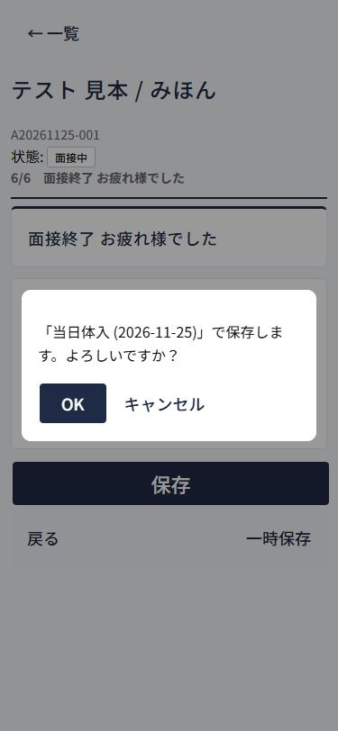
黒服
「OK」 (1 回 押したら 待つ)
状態は 「一日体験予定」。体入管理と レジの 表に 行が 出る
応募者一覧の 上の「体入管理へ」から 開きます。
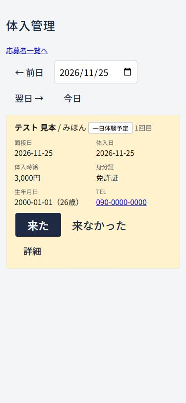
黒服
その子が 来るまで 待つ
体入日・時給・身分証・電話が 出る (電話は タップで かけられる)
来なければ「来なかった」(あとから「来た」も 可)。
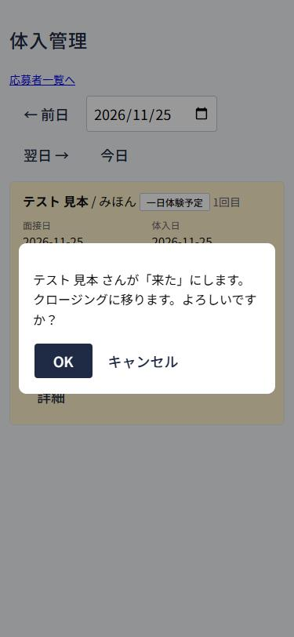
黒服
「来た」 → 確認で「OK」
状態が 「クロージング」 に 進む
体入管理に 載ると、レジ_一日体験の タブにも 同じ 人の 行が できます。
出勤・退勤の 時刻と 支給額を 入れる。電話・住所は 出ません。
確認中 レジの「担当」「メモ」「日報に 入力済」を だれが 入れるかは、まだ 確認が 済んでいません。
この 枚は 表の 見本です (画面の 写真では ありません)。
体験が 済んだら、本人と 話して 結果を 決めます。
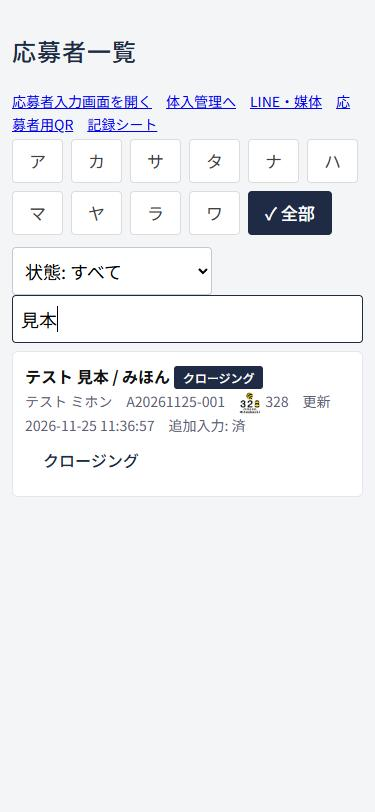
黒服
一覧の 「クロージング」
クロージングの 画面が 開く
上の 方で 念のため 確認します。
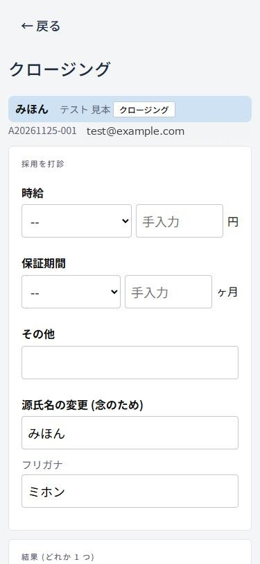
黒服
時給・保証期間・源氏名を えらぶ (直す 所だけ)
ここで 入れた 時給が 入店後の 在籍に 入る
一番 下の 4 つ。この 説明書では「入店」を 押していません。
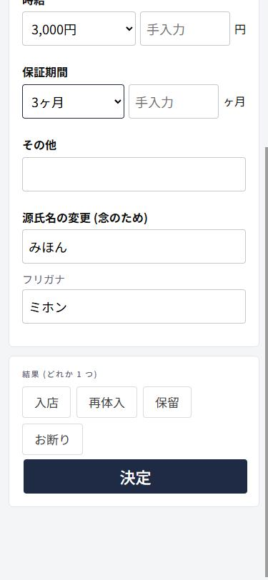
店舗・店番・入店日・シフトが 出る → 「決定」→ OK で 在籍に 載る
日程を えらぶ → 「一日体験予定」に 戻る
保留は 灰色で 残る。お断りは 翌日 18 時に 自動メール (ON / OFF)
この 説明書では 押していません。文だけで 説明します。
店舗・店番 (空なら 候補の 番号)・入店日を 見て「決定」→ 確認で OK。1 回 押したら 待つ。
応募者の 状態が「採用」に なり、在籍の タブに 行が できる。メールが ある人には、15 分以内に マイページの URL が 届く。
その場で 渡す 時は ポータル「在籍一覧」の QR。Excel (在籍一覧) は 店の 手作業です。
そのほかは、キャストが 自分で 入れるか、自動で 進みます。
来たら 押して QR
面接 6/6 で「当日体入」
体入管理
クロージングで「入店」
押す 間に、面接で 聞いて 入れる 項目 (身分証・時給・健康状態 4 つ) が あります。押した あとは 画面から 取り消せません。わからない 時は 押す前に 聞いてください。